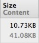
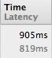
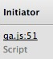
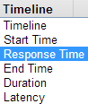
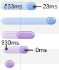

Opening Devtools ◊
To access the developer tools, on any web page or app in Google Chrome you can use one of these options:
- Select the Wrench menu at the top-right of your browser window, then select Tools → Developer tools.
- Right-click on any page element and select Inspect element.
| Windows / Linux | Mac | |
|---|---|---|
| Open Developer Tools | Ctrl + Shift + I | ⌥ + ⌘ + I |
| Open Developer Tools and bring focus to the Console | Ctrl + Shift + J | ⌥ + ⌘ + J |
| Toggle Inspect Element mode | Ctrl + Shift + C | ⌥ + ⌘ + C |
View the list of shortcuts: type ? when the Developer Tools window is open.
Global Shortcuts
| Windows / Linux | Mac | |
|---|---|---|
| Open Shortcut Help | ? | ? |
| Next Panel | Ctrl + ] | ⌘ + ] |
| Previous Panel | Ctrl + [ | ⌘ + [ |
| Backwards in Panel History | Ctrl + Alt + ] | ⌘ + Alt + ] |
| Forwards in Panel history | Ctrl + Alt + [ | ⌘ + Alt + [ |
| Toggle Console | Esc | Esc |
| Focus Search Box | Ctrl + F | ⌘ + F |
| Search Across All Sources | Ctrl + Shift + F | ⌘ + ⌘ + F |
| Find Previous | Ctrl + Shift + G | ⇧ + ⌘ + G |
| Find Next | Ctrl + G | ⌘ + G |
| Go to Source | Ctrl + O | ⇧ + O |
| Go to Line | Ctrl + G | ⌘ + G |
| Restore Default text size | Ctrl + 0 | ⇧ + 0 |
| Zoom In | Ctrl + | ⇧ + |
| Zoom Out | Ctrl - | ⇧ - |
Elements Panel ◊
| Windows / Linux | Mac | |
|---|---|---|
| Navigate | Up, Down | Up, Down |
| Expand / Collapse Node | Right, Left | Right, Left |
| Expand Node | Double-Click on tag | Double-Click on tag |
| Edit Attribute | Return or Double-Click on attribute | Enter or Double-Click on attribute |
Right Clicking an Element you can:
- Force Element Psuedo States: (:active, :hover, :focus, :visited)
- Set breakpoints on the Elements: (Subtree Modifications, Attribute Modification, Node Removal)
Styles Sidebar ◊
| Windows / Linux | Mac | |
|---|---|---|
| Edit Rule | Double-Click | Double-Click |
| Insert New Property | Double-Click on whitespace | Double-Click on whitespace |
| Edit Next / Previous Property | Tab, Shift-Tab | Tab, ⇧ + Tab |
| Increment / Decrement Value | Up, Down | Up, Down |
| Increment / Decrement Value by 10 | Shift + Up, Shift + Down | ⇧ + Up, ⇧ + Down |
| Increment / Decrement Value by 10 | PgUp, PgDown | PgUp, PgDown |
| Increment / Decrement Value by 100 | Shift + PgUp, Shift + PgDown | ⇧ + PgUp, ⇧ + PgDown |
| Increment / Decrement Value by 0.1 | Alt + Up, Alt + Down | ⌥ + Up, ⌥ + Down |
 Emulate an element's pseudo state (:active, :hover, :focus, :visited)
Emulate an element's pseudo state (:active, :hover, :focus, :visited)
 Add new style selectors
Add new style selectors
Network Panel ◊
Understanding the information displayed within each column.
-

Size: Total size of resource
Content: Gzipped size of resource -

Time: total duration to get response
Latency: time taken to get first byte -

File that initialized the resource load
How the resource load was scheduled
-  Select the Timeline heading to change sort modes for the network.
-

Transparent: Latency load time
Solid: Total load time
Sources Panel ◊
| Windows / Linux | Mac | |
|---|---|---|
| Select Next Call Frame | Ctrl - . | ⌃ + . |
| Select Previous Call Frame | Ctrl + , | ⌃ + , |
| Continue | F8 or Ctrl + / | F8, ⌘ + / |
| Step Over | F10, Ctrl + ' | F10, ⌘ + ' |
| Step Into | F11, Ctrl + ; | F11, ⌘ + ; |
| Step Out | Shift + F11, Ctrl + Shift + ; | ⇧ + F11, ⇧ + ⌘; |
| Evaluate Selection | Ctrl + Shift + E | ⇧ + ⌘ + E |
| Toggle Breakpoint Condition | Click on line number | Click on line number |
| Edit Breakpoint Condition | Right-Click on line number | Right-Click on line number |
 Don't Pause on Exceptions
Don't Pause on Exceptions
 Pause on Uncaught Exceptions (including those within try/catch blocks)
Pause on Uncaught Exceptions (including those within try/catch blocks)
Pause on Uncaught Errors (usually the one you want)
ExceptionsTimeline Panel ◊
| Windows / Linux | Mac | |
|---|---|---|
| Start / Stop recording | Ctrl + E | ⌃ + E |
Profiles Panel ◊
Profiling types:
- CPU profiler: shows where execution time is spent in your page's JavaScript functions
- Heap profiler: shows memory distribution by your page's JavaScript objects and related DOM nodes
Console
| Windows / Linux | Mac | |
|---|---|---|
| Next Suggestion | Tab | Tab |
| Previous Suggestion | Shift + Tab | ⇧ + Tab |
| Accept Suggestion | Right | Right |
| Previous Command / Line | Up | Up |
| Next Command / Line | Down | Down |
| Previous Command | Ctrl + P | ⌃ + P |
| Next Command | Ctrl + N | ⌃ + N |
| Clear History | Ctrl + L | ⌘ + K, ⌃ + L |
| Multiline entry | Shift + Enter | Ctrl + Return |
| Execute | Enter | Return |
Right click on console:
XMLHTTPRequest logging: Select to turn on so you can view the XHR log.
Preserve log upon navigation
Search Shortcuts
Find or navigate to specific files, methods or line numbers in an web app within the Sources panel.
| Windows / Linux | Mac | |
|---|---|---|
| Search scripts, stylesheets and snippets by filename | Ctrl + O | ⌘ + O |
| Text search within current file | Ctrl + F | ⌘ + F |
| Text search across all files | Ctrl + Shift + F | ⌘ + Opt + F |
| Filter/navigate to a JavaScript function/CSS rule when viewing a file | Ctrl + Shift + O | ⌘ + ⌘ + O |
| Launch line number dialog when viewing a file | Ctrl + K | ⌘ + L |
Console API
| Command | Description |
|---|---|
| console.assert(expression[, object, ...]) | Tests that an expression is true. If not, it will write a message to the console and throw an exception. |
| console.clear() | Clears the console. |
| console.constructor() | |
| console.count([title]) | Writes the number of times that the line of code where count was called was executed. The optional argument title will print a message in addition to the number of the count. |
| console.copy() | Copies everything passed to it to the clipboard. |
| console.debug(object[, object, ...]) | Writes a message to the console, including a hyperlink to the line where it was called. |
| console.dir(object) | Prints an interactive listing of all properties of the object. This looks identical to the view that you would see in the DOM tab. |
| console.dirxml(node) | Prints the XML source tree of an HTML or XML element. This looks identical to the view that you would see in the HTML tab. You can click on any node to inspect it in the HTML tab. |
| console.error(object[, object, ...]) | Writes a message to the console with the visual "error" icon and color coding and a hyperlink to the line where it was called. |
| console.exception(error-object[, object, ...]) | Prints an error message together with an interactive stack trace of JavaScript execution at the point where the exception occurred. |
| console.group(object[, object, ...]) | Writes a message to the console and opens a nested block to indent all future messages sent to the console. Call console.groupEnd() to close the block. |
| console.groupCollapsed(object[, object, ...]) | Like console.group(), but block is initially collapsed. |
| console.groupEnd() | Closes the most recently opened block created by a call to console.group() or console.groupCollapsed(). |
| console.hasOwnProperty() | |
| console.info(object[, object, ...]) | Writes a message to the console with the visual "info" icon and color coding and a hyperlink to the line where it was called. |
| console.isPrototypeOf() | |
| console.keys() | Gives you the names of all the elements of an object. |
| console.log(object[, object, ...]) | Writes a message to the console. You may pass as many arguments as you'd like, and they will be joined together in a space-delimited line. You can use printf-like string substitution patterns as well which are:
|
| console.memory() | |
| console.performance() | |
| console.performance.timing() | |
| console.performance.memory() | |
| console.performance.navigation() | |
| console.profile([title]) | Turns on the JavaScript profiler. The optional argument title would contain the text to be printed in the header of the profile report. |
| console.profileEnd() | Turns off the JavaScript profiler and prints its report. |
| console.profiles() | An array of profile objects that summarizes the data from profile(). |
| console.propertyIsEnumerable() | |
| console.table(data[, columns]) | Allows to log provided data using tabular layout. The method takes one required parameter that represents table like data (array of arrays or list of objects). |
| console.time([name]) | Creates a new timer under the given name. Call console.timeEnd(name) with the same name to stop the timer and print the time elapsed. |
| console.timeEnd() | Stops a timer created by a call to console.time(name) and writes the time elapsed. |
| console.timeStamp() | |
| console.toLocaleString() | |
| console.toString() | |
| console.trace() | Prints an interactive stack trace of JavaScript execution at the point where it is called. |
| console.values() | Gives you all the values of those elements. |
| console.warn(object[, object, ...]) | Writes a message to the console with the visual "warning" icon and color coding and a hyperlink to the line where it was called. |
| console.valueOf() | |
| window.onerror | When exceptions are thrown in the window context and is not caught by any try/catch block, the function will be invoked with the exception's message, the URL of the file where the exception was thrown and the line number in that file passed as three arguments in that order.
window.onerror = function(msg, url, line) {
console.log('message: ' + msg, 'url: ' + url, 'line: ' + line);
};
|
Command Line API
| Command | Description |
|---|---|
| $$ | Returns an array of elements that match the given CSS selector. |
| $0 | The currently-selected object in the inspector. |
| $_ | The previously evaluated statement |
| $1 | The previously-selected object in the inspector. |
| $n(index) | Access to an array of last 5 inspected elements. |
| dir(object) | Prints an interactive listing of all properties of the object. This looks identical to the view that you would see in the DOM tab. |
| dirxml(node) | Prints the XML source tree of an HTML or XML element. This looks identical to the view that you would see in the HTML tab. You can click on any node to inspect it in the HTML tab. |
| clear() | Clears the console. |
| inspect(object[, tabName]) | Inspects an object in the most suitable tab, or the tab identified by the optional argument tabName. |
| keys(object) | Returns an array containing the names of all properties of the object. |
| values(object) | Returns an array containing the values of all properties of the object. |
| monitorEvents(object[, types]) | Turns on logging for all events dispatched to an object. The optional argument types may specify a specific family of events to log. The most commonly used values for types are "mouse" and "key". The full list of available types includes "composition", "contextmenu", "drag", "focus", "form", "key", "load", "mouse", "mutation", "paint", "scroll", "text", "ui", and "xul". |
| unmonitorEvents(object[, types]) | Turns off logging for all events dispatched to an object. |
| profile([title]) | Turns on the JavaScript profiler. The optional argument title would contain the text to be printed in the header of the profile report. |
| profileEnd() | Turns off the JavaScript profiler and prints its report. |
Flags (full list)
| Feature | Description |
|---|---|
| -disable-javascript | Disable JavaScript from command line. |
| -disable-images | Disable images. |
| -disable-java | Disable Java. |
| -disable-plugins | Disable plugins. |
| -disable-popup-blocking | Disable popup blocking. |
| -start-maximized | Start Chrome fullscreen |
For example: "C:\Documents and Settings\%username%\Local Settings\Application Data\Google\Chrome" -disable-javascript
DevTools Themes ◊
- MNML Theme
- Monokai Dark
- Tomorrow Theme
- IR_Black Theme
- IR_Black Theme with sidebar colors
- Solarized Dark
- Ruby Blue
- Expresso
- Inversion
- Dark Theme
- Dark Dev
- WebLight Theme
You can tweak your skin for the DevTools using the DevTools themselves by undocking them then hitting Ctrl + Alt + I or ⌃ + Alt + I on Mac. We expose the classes/IDs you can theme via chrome-devtools:devtools/devTools.css.
Read about how to customize your Devtools.
Opening Google Chrome features
| Windows / Linux | Mac | |
|---|---|---|
| Open a new window in incognito mode | Ctrl + Shift + N | ⌘ + Shift + N |
| Toggle bookmarks bar on and off | Ctrl + B | ⌘ + B |
| View the History page | Ctrl + H | ⌘ + H |
| View the Downloads page | Ctrl + J | ⌘ + J |
| View the Task manager | Shift + ESC | Shift + ESC |
| Previous page in a tabs browsing history | Backspace, Alt + ← | Backspace, Alt + ← |
| Places a '?' in the address bar. Type a search term after the '?' to perform a search using your default search engine | Ctrl + K, Ctrl + E | ⌘ + K, ⌘ + E |
| Highlight content in the web address area | F6, Ctrl + L, Alt + D | F6, ⌘ + L, Alt + D |
about:pages
| Page | Description |
|---|---|
| about:about | Displays all the chrome://chrome-urls |
| about:stats | Display page statistics. |
| about:memory | Display memory usage in a multi-process browser. |
| about:plugins | Display installed plug-ins. |
| about:histograms | Display connection times. |
| about:dns | Display DNS information. |
| about:cache | Display cached web pages. |
| about:network | Display a menu for various network monitoring and testing. |
| view-cache:stats | Display cached documents. |
| chrome-resource:/favicon/ | Display the binary data for a PNG file. |
| chrome-resource:/new-tab/ | A template for the empty tab page. |
| about:version | Display information about the browser. |
Chrome URLs
- chrome://chrome-urls == about:about
- chrome://appcache-internals
- chrome://blob-internals
- chrome://bookmarks
- chrome://cache
- chrome://crashes
- chrome://credits
- chrome://dns
- chrome://downloads
- chrome://extensions
- chrome://flags
- chrome://flash
- chrome://gpu-internals
- chrome://histograms
- chrome://history
- chrome://ipc
- chrome://media-internals
- chrome://memory
- chrome://net-internals
- chrome://view-http-cache
- chrome://newtab
- chrome://plugins
- chrome://print
- chrome://quota-internals
- chrome://sessions
- chrome://starts
- chrome://sync-internals
- chrome://tcmalloc
- chrome://terms
- chrome://tracing
- chrome://version
- chrome://workers
- chrome://conflicts
For Debugging
The following pages are for debugging purposes only. Because they crash or hang the renderer, they're not linked directly; you can type them into the address bar if you need them.
- chrome://crash
- chrome://kill
- chrome://hang
- chrome://shorthang
- chrome://gpuclean
- chrome://gpucrash
- chrome://gpuhang
Devtools Links
- Getting started
- Inspecting Elements and Resources
- Debugging JavaScript
- Profiling and Optimizing
- Timeline Panel
- Console API
- Command Line API
- JavaScript Console Power User
- Chrome Devtools
- Chrome Shortcuts
- The Breakpoint #2
- Google IO 2010 session
- Google IO 2011 session
- Google IO 2012: Developer Tools Evolution
- Secrets of the Chrome Developer Tools
- Wait, DevTools could do THAT?